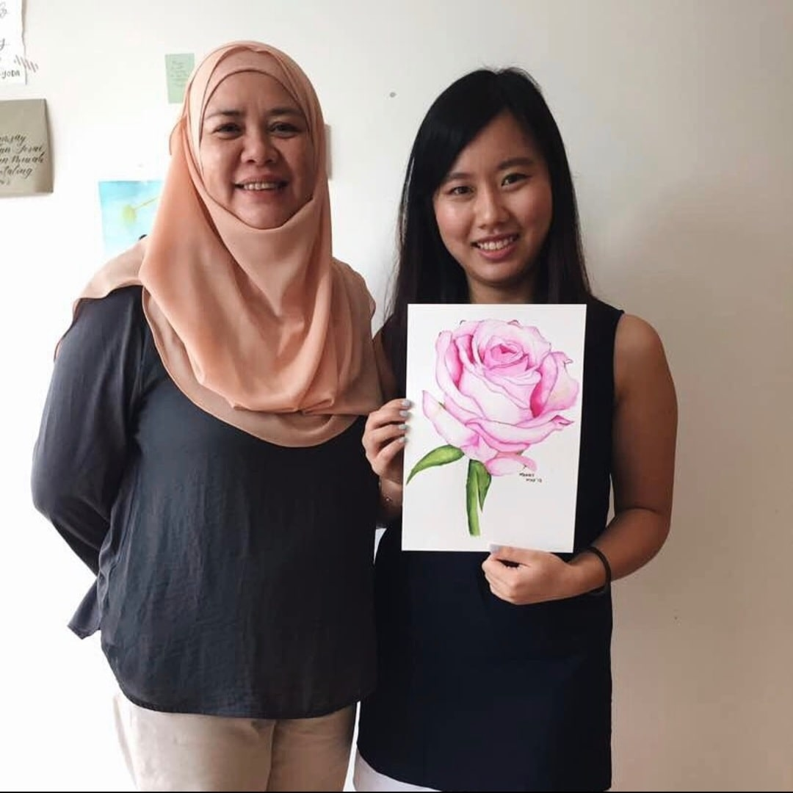
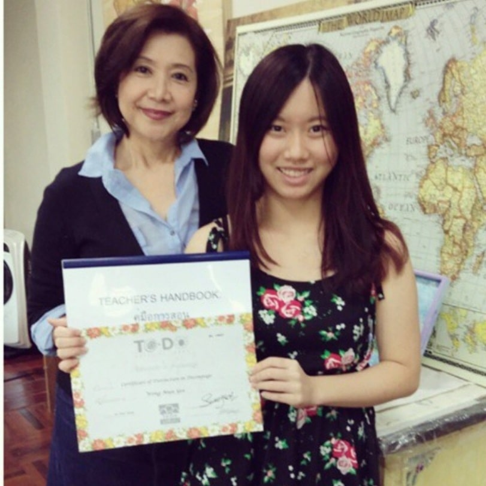

Mandy is a budding young artist from Kuala Lumpur, Malaysia. Since young, she has always been interested in arts & crafts.
After getting her Bachelor's Degree in Education, Mandy worked in many pre-schools where she taught English, as well as Art Education.
In late 2016, Mandy rediscovered her passion for arts & crafts, when she actively joined local art workshops.
Since then, she has joined:
Calligraphy workshops
Botanical rose workshops
Pouring art
Loose floral workshops
Chinese painting class
Paper flower workshop
Mandy also took part in several international art courses that were held in Indonesia
Acrylic painting workshop
Sculpture painting certified course
Certified sculpture painting course
with Teacher Nissa in Bandung, Indonesia
in late 2019
Mandy loves joining workshops & exploring new types of art, but one in particular caught her interest.
After getting her own water-colour set, Mandy began painting many florals and eventually created her Instagram page @remandy.art
Other than being a water-colourist, Mandy is also a certified Decoupage artist & teacher.
In 2014, she received her first decoupage certificate from Bangkok, Thailand with teacher Swangsri.
She also met up with the Mr. Fabio (founder of To-Do Creative Ideas Italy) in 2018.
In Feb 2020, she completed her teacher's certificate in Sospeso Trasparente art in Jakarta, Indonesia. Mandy is currently the youngest & the 5th certified teacher in Malaysia
Mandy with Ms Monica (founder of Sospeso Trasparente Italy)